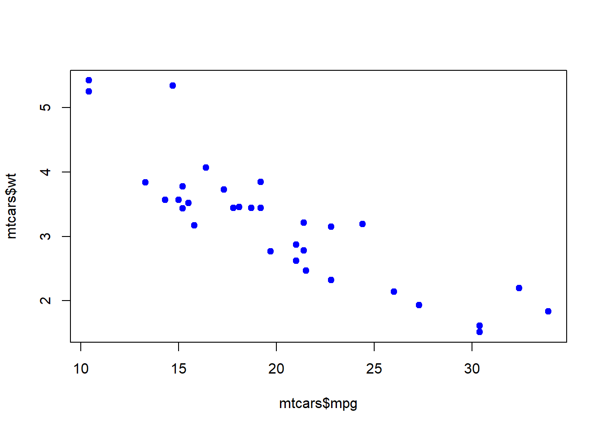

11 Exploración general de modelos
Se utilizará el dataset llamado mtcars. Incluye datos sobre autos:
| Atributo | Descripción | Tipo |
|---|---|---|
| mpg | Millas por Galón | Continuo |
| cyl | Número de cilindros | Nominal |
| disp | Desplazamiento | Continuo |
| hp | Caballo de Fuerza | Continuo |
| drat | Relación del Eje de Rueda Real | Continuo |
| Wt | Peso | Continuo |
| qsec | Tiempo para 0.25 millas | Continuo |
| vs | V/S | Nominal |
| am | Tipo de transmisión | Nominal |
| gear | Número de marchas | Ordinal |
| carb | Número de carburadores | Ordinal |
11.1 Modelo lineal simple
##
## Call:
## lm(formula = mpg ~ wt, data = mtcars)
##
## Residuals:
## Min 1Q Median 3Q Max
## -4.5432 -2.3647 -0.1252 1.4096 6.8727
##
## Coefficients:
## Estimate Std. Error t value Pr(>|t|)
## (Intercept) 37.2851 1.8776 19.858 < 2e-16 ***
## wt -5.3445 0.5591 -9.559 1.29e-10 ***
## ---
## Signif. codes: 0 '***' 0.001 '**' 0.01 '*' 0.05 '.' 0.1 ' ' 1
##
## Residual standard error: 3.046 on 30 degrees of freedom
## Multiple R-squared: 0.7528, Adjusted R-squared: 0.7446
## F-statistic: 91.38 on 1 and 30 DF, p-value: 1.294e-10
En el summary se puede observar que la mediana de los residuos cae cercana a cero. A pesar de que varían bastante el \(Q_3\) cae en 1.4 que no es tan alto.
Si vemos los coeficientes, especificamente el intercepto. Podemos ver que cuando \(x=0\), el valor esperado de \(y\) será 37.3. Pero no es rasonzable que \(x\) sea igual a 0 en algún momento, por lo que no tiene tanto interés en este caso.
Observando los coeficiente de pendiente, en este caso solo wt, vemos que da -5. Lo que significa que por cada incremento de wt, el valor esperado de \(y\), es decir mpg, disminuye 5 veces. Y tiene sentido porque a medida que aumenta el peso del vehículo, aumenta el consumo (un valor más grande de mpg significa menor consumo).
11.2 Incluir interacciones
Se pueden incluir interacciones, por ejemplo, nos podemos preguntar si el peso del vehículo y la cantidad de cilindros estpa relacionada con la variable de respuesta (mpg).
# Modelo con interacción
modelo_interaccion <- lm(mpg ~ wt * cyl, data = mtcars)
summary(modelo_interaccion)##
## Call:
## lm(formula = mpg ~ wt * cyl, data = mtcars)
##
## Residuals:
## Min 1Q Median 3Q Max
## -4.2288 -1.3495 -0.5042 1.4647 5.2344
##
## Coefficients:
## Estimate Std. Error t value Pr(>|t|)
## (Intercept) 54.3068 6.1275 8.863 1.29e-09 ***
## wt -8.6556 2.3201 -3.731 0.000861 ***
## cyl -3.8032 1.0050 -3.784 0.000747 ***
## wt:cyl 0.8084 0.3273 2.470 0.019882 *
## ---
## Signif. codes: 0 '***' 0.001 '**' 0.01 '*' 0.05 '.' 0.1 ' ' 1
##
## Residual standard error: 2.368 on 28 degrees of freedom
## Multiple R-squared: 0.8606, Adjusted R-squared: 0.8457
## F-statistic: 57.62 on 3 and 28 DF, p-value: 4.231e-12- Residuos: Mediana cercana a 0 y el \(Q_3\) es bajo, por lo que los valores predichos y observados son basatante similares.
- Coeficientes:
- Intercepto: El valor de intercepto no es muy interesante, porque las variables independientes no pueden ser cero.
- wt: Por cada aumento de 1 unidad en wt, se espera que mpg disminuya aproximadamente 8.7 unidades, cuando se mantiene el número constante de cilindros.
- cyl: Por cada aumento de un cilindro, se espera que mpg disminuya 3.8 unidades, manteniendo el peso constante.
- wt:cyl (interacción): Indica que el efecto del peso en mpg varía según el número de cilindros. Específicamente, por cada incremento de 1 cilindro, el efecto negativo de wt sobre mpg se incrementa en 0.8 unidades.